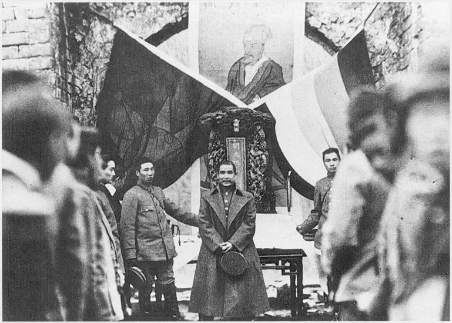
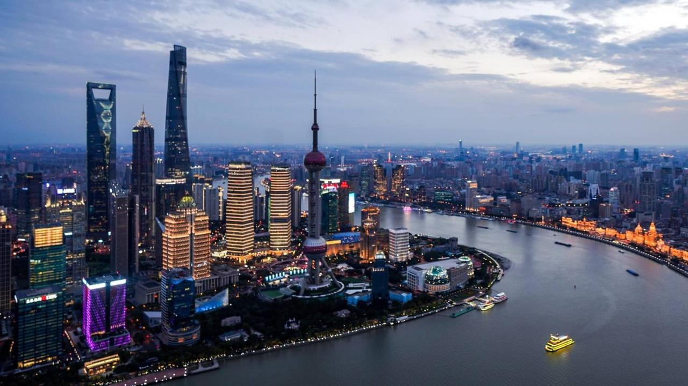

 After China's defeat in the war, Taiwan surrendered to Japan in 1895. When the Qing dynasty ruled China in 1911, the country faced political difficulties. Two political-military factions competed for control of China's future. Both the Kuomintang Nationalist Party (KMT) and the Chinese Communist Party (CCP) are in power in Taiwan (CCP). The KMT wanted China to be a constitutional republic modeled after the Western model, whereas the CCP wanted a communist revolution.
On December 1, 1943, with Japan defeated in World War II, the heads of state of China, the United States, and the United Kingdom signed the Cairo Declaration. According to the declaration, all territories seized by Japan were returned to China. Taiwan was returned to China after Japan surrendered. However, the two sides went back to civil war. China, as a KMT supporter, attempted to mediate the conflict between the two parties.
Even so, the two continued to maintain a cease-fire. The war lasted until October 1, 1949, when CCP leader Mao Zedong announced the formation of the People's Republic of China (PRC) in Beijing. The formation of the PRC resulted in a CCP victory, forcing KMT leader Chiang Kai Shek to flee to Taiwan. In 1949, the KMT declared Taipei, on the island of Taiwan, to be the capital of the Republic of China. This declaration also severed ties with the CCP-controlled mainland China.
China: Debt-financed investment has been one factor driving China's economic growth in recent years. However, rising debt levels pose significant economic risks, according to the International Monetary Fund, which also cautioned against the rapid development of new financial products. The world's second largest economy will combine its banking and insurance regulators into one agency to improve oversight of its financial system.
Taiwan: The expansion of textile factories and businesses that manufactured light goods like footwear, small appliances, and sports equipment helped Taiwan begin its industrialisation process. Companies then switched to producing semiconductors and electrical devices like computers, televisions, and radios. Taiwan was one of the biggest producers of computers and computer accessories by the middle of the 1980s. Additionally, it was successful in establishing the shipbuilding and steel industries, but these were of less importance than the companies producing ICT products. The fact that Taiwan's economy is based mostly on small and medium-sized businesses rather than big conglomerates, as has been the case in Japan and South Korea, is cited as one explanation for this situation.
